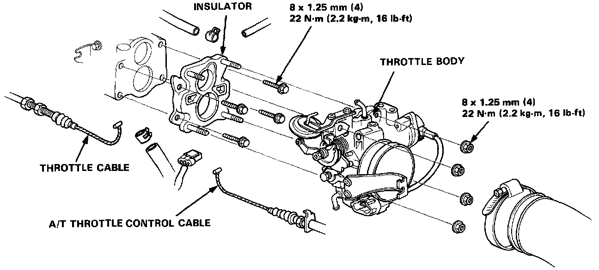
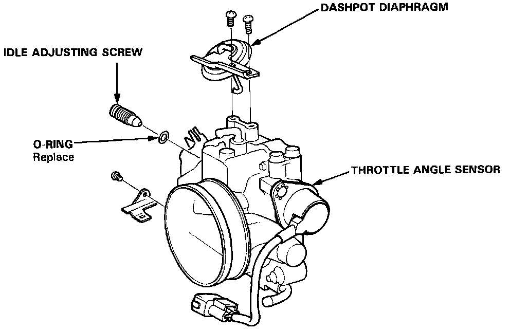

Operation CHARM
: Car repair manuals for everyone.
Home
>>
Acura
>>
1987
>>
Legend Sedan V6-2494cc 2.5L SOHC FI
>>
Repair and Diagnosis
>>
Powertrain Management
>>
Fuel Delivery and Air Induction
>>
Throttle Body
>>
Service and Repair
>>
Sedan
Sedan


Disassembly
CAUTION:
-
The throttle stop screw is non-adjustable.
-
After re-assembly, adjust the throttle cable, and A/T throttle control cable for cars with A/T.